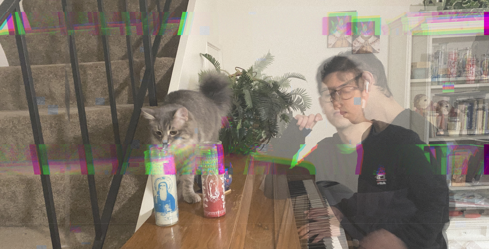

About

Hi I am Pablo Gomez, born in Guanajuato, Mexico. Research epidemiologist by day, audiovisual artist by night; I have been working in health sciences for the last 10 year. Trough my journey I have been fortunate to see the world from many perspectives. From working in farms in the southern border of Mexico, to working surrounded by computers in the basement of a research institution. I am interested in the intersection of science and art and how we can use technology to unravel the beauty of complex systems.
In my “daytime” job I use techniques in statistics, programming and simulation modeling; in my artistic work I like to explore techniques such as algorithmic composition for both music and visuals. I find my inspiration in the interrelationship of human society with nature, and I like to think that my work serves as bridges between different areas of knowledge.
I am an advocate of open access frameworks and affordable computing, and I am interested in liberating from the capitalist thinking that you need expensive tools to make good digital art.
You can find my music on all streaming platforms including: Bandcamp, Soundcloud, Spotify, YouTube and Apple Music.
Social media